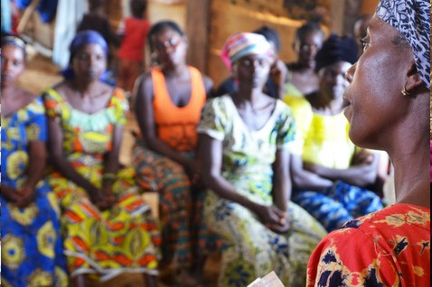

-
‘Not everything that shines is gold’
25.10.2018
Yajaira Mina is initially a bit shy to share her story with the group of participants that joined the National Advisory Committee in Bogota. On a regular day, Yajaira works in a local gold mining community with her female colleagues. Such a formal meeting in Bogota is a new experience for her but once she starts telling her story the participants immediately respect her courage and appreciate her contribution.
Mineral selectors
In order to start a fruitful discussion on artisanal and small scale mining (ASM) in Colombia, Yajaira illustrates the reality on the ground. Yajaira explains the struggles she and her female colleagues are facing in getting their work recognized. Besides some crucial struggles, Yajaira also shares a positive development within their mining community. The women are now called “seleccionadoras de mineral” (women mineral selectors) instead of ‘chatarreras’ (waste-pickers). This is an essential step in dignifying their labour and getting access to formal supply chains and a fair gold price.
Setting up an association
A few days later, we meet Yajaira again but this time in her own territory in Suarez. Together with her colleagues, Yajaira tells us about the changes after receiving support from the CAPAZ project.This project was set up by the Alliance for Responsible Mining (ARM), with financial support of the EPRM. By setting up the “Association of Women Mineral Selectors and Peacebuilders of the Municipality of Suárez”, it became possible to start the path for improving their practices progressively it became possible to improve their practices. This means that the women have learned about health and safety conditions, commercial skills and organizational aspects. The project supported the women in getting access to bank accounts, fiscal registers and gave them a permit to sell their gold in formal markets according to Colombian regulation.
First CRAFT sale
All these steps are necessary to conduct the first gold sale under the ‘CRAFT code’. The Code of Risk mitigation for Artisanal and small-scale miners engaging in Formal Trade (CRAFT) helps expand trade between legitimate artisanal producers, refiners and other supply chain actors. Some of the women participated in the first gold sale using CRAFT. This is an extraordinary achievement taking into account the steps that these brave women have taken. It also means they received a better price for their gold, in comparison to the informal market prices they usually receive, which is a crucial step to build a better quality of life.Sustainable supply chain
It was encouraging to hear that this pilot project received many attention from local miners who are motivated to also start improving their practices. EPRM hopes that the rules and regulations for artisanal and small scale mining to sell their gold formally, will be aligned with the realities on the ground and with the market needs. This way, with the support of EPRM through an organization working in the ground, the Alliance for Responsible Mining, we can jointly create a sustainable supply chain that supports responsible practices and improves the livelihoods of female mineworkers in and around mining communities.For more information on the second phase of the CAPAZ project, please follow our website or subscribe to the EPRM Newsletter. Also, you can find the latest developments on the website of ARM.
-
CRAFT Code released
8.8.2018
The EPRM is proud to have financed the Alliance for Responsible Mining (ARM) and RESOLVE to develop the Code of Risk mitigation for ASM engaging in Formal Trade (CRAFT). This code facilitates the relationship between the gold industry and the ASM sector. Artisanal miners produce 20% of the world’s gold, but the complexities of artisanal supply chains often deter refiners and downstream customers who are committed to due diligence and risk management, as there has not been a clear standard for “market acceptability” of artisanal gold.
To fill this gap, RESOLVE and the Alliance for Responsible Mining (ARM) have partnered to develop the Code of Risk mitigation for Artisanal and small scale mining engaged in Formal Trade (CRAFT), a new code of practice that helps miners and their buyers to assess critical social and environmental risks in artisanal supply chains – such as child labor, illicit trade, and uncontrolled use of chemicals – and to track progress in mitigating these and other risks.
The code will help miners to understand and demonstrate conformity with the requirements of global markets, therefore improving their access to legal supply chains and better trading conditions. At the same time, companies will benefit from expanded, responsible minerals supply and governments will receive increased revenues as the formal market grows.
“For global minerals supply chains, change and market engagement is most critically needed in the places that face the greatest challenges,” said Jennifer Peyser, Director of the Ethical Resource Program at RESOLVE. “CRAFT is innovative as a multi-stakeholder vetted, open source tool to help companies support the economies of artisanal communities, while following good risk management practice and ensuring they are not contributing to illicit trade or human rights abuses.”
The code has recently undergone a global stakeholder consultation, and CRAFT’s Standard Committee and Advisory Group approved the final version for publication in July. The European Partnership for Responsible Minerals has proudly provided support for the first phase of CRAFT and is excited to continuously support the next phase.
“We see CRAFT as one of the cornerstones to drive responsible ASM mining and sourcing,” said Simone Knobloch, COO of Valcambi, a gold refinery. “It is the first industry tool that empowers miners to understand the market sourcing and due diligence requirements, assess their practices and how to address potential gaps, so that they can comply and report conformance with those needs, while providing supply chain actors with the instrument to engage with miners. It will facilitate due diligence by all along the value chain. Using CRAFT schemes, we will be able to support mines improve their practices so they can access global market”.
More information about the CRAFT Code can be found here.
-
ICMM: Well-being improved in mining-dependent countries
9.7.2018
A recent report of the International Council of Mining and Metals (ICMM) finds that the lives of people in mining-dependent countries have, on average, improved faster than those of people in other countries over the past 20 years. The report challenges the conventional belief that extractive industries can impede social and economic well-being of populations.
The report, which is called ‘Social progress in mining-dependent countries’, uses the lens of the United Nations Sustainable Development Goals (SDGs) and finds that most mining-dependent countries have significantly improved their social performance over the 20 years leading up to the launch of the SDGs in 2015.
People in the 25 countries that are mining-dependent are now generally healthier, better educated, and enjoy improved access to affordable and clean energy, water and sanitation, and telecommunications and financial services. The report shows that people living in these countries are better off in absolute terms and that they outperformed countries that are not resource dependent.
However, the report cautions against attributing causality between the prevalence of mining alone and observed social progress. There are other factors at play, including government capacity and policies, quality of governance, economic activity in other sectors, and the effectiveness of social programmes (run by the government, the private sector, and NGOs).
The report reaffirms the potentially important contribution the mining sector can make to shaping social progress. The observed gaps in the social performance of mining-dependent countries could also help mining companies and other stakeholders identify priorities for engaging in productive partnerships with host governments, communities, and civil society.
This principle has been endorsed by and is embedded within the EPRM. Do you want to know more about the EPRM-funded projects? Read about them here.
The entire report of the ICMM can be read here.
-
Dell and IMPACT announce collaboration to support women's empowerment in Democratic Republic of Congo
17.7.2018
As the Dell’s Women Entrepreneur Network (DWEN) meets in Toronto to discuss issues and opportunities that women entrepreneurs face, the tech leader announces new funding for business education of women in Congo focused on investing strategies to support new entrepreneurship opportunities. The trainings are part of the AFECCOR project, partly funded by the European Partnership for Responsible Minerals (EPRM).
Dell is teaming with the Canadian-based non-profit IMPACT to provide women in the Democratic Republic of Congo with business education focused on investing their savings into new entrepreneurship opportunities in their communities.
The partnership will provide over 300 women artisanal gold miners in northeastern Democratic Republic of Congo’s Ituri Province with business skills training through IMPACT’s Artisanal Mining Women’s Empowerment Credit and Savings project (AFECCOR). The AFECCOR project supports women and men in artisanal gold mining communities in establishing Village Savings and Loans Associations. Participants are empowered to invest their savings into new entrepreneurial activities. Hereby, AFECCOR specifically targets women’s social and economic empowerment in their homes, at artisanal mine sites, and in the wider community. With Dell’s funding, IMPACT can expand the support it provides to women participating in the project.
“Our research shows that access to secure savings and credit is a major barrier for women to have an equal opportunity as economic actors in the artisanal mining sector. With the support of AFECCOR, women have been putting aside a small amount of money into their savings for the past months—and as that amount increases, so does their confidence in planning for the future,” said Joanne Lebert, IMPACT’s Executive Director.
“Women are now excited about what they can do with their growing savings. Thanks to Dell’s support, we can provide women participating in the project with the skills they need to succeed in their new entrepreneurial activities and supplement their income,” Lebert added.
Dell has a long-standing commitment to support women’s empowerment, connecting women entrepreneurs with access to capital, networks and technology to grow their business. The company is also committed to empowering vulnerable communities impacted by the technology supply chain. By operating this project in a remote rural area with high rates of poverty, illiteracy, and poor infrastructure (health, electricity, and financial services), Dell hopes that women will have more opportunity to be part of the formal economy and contribute to peaceful economic development within their communities and the region.
“We constantly look for ways to apply our resources and capabilities to address the greatest needs of communities. The partnership with IMPACT will equip women with entrepreneurial skills and business training to help them support their families and fulfill their potential in a particularly vulnerable part of the world,” said Christine Fraser, Chief Responsibility Officer, Dell.
Read the entire article here.
Photo: A community volunteer provides literacy and financial coaching to members in her Village and Savings Association, as part of IMPACT’s AFECCOR project in the Democratic Republic of Congo’s northeastern Ituri Province. Zuzia Danielski/IMPACT
-
Valcambi refines gold from Minera Limata co-operative, a small-scale mine in Peru
10.4.2018
Valcambi, the Swiss gold refiner and one of the strategic EPRM members, announced that it is entering into a long-term supply agreement with the Minera Limata Limitada mining co-operative Concession AFC 12 (LIMATA AFC 12), a small-scale mine near Puno, South Peru.
Thanks to a collaboration between the refiner and Fairtrade, Valcambi enabled LIMATA AFC 12 to access global markets for the first time. Valcambi, complemented by Fairtrade’s existing on-the-ground relationship with the mine, worked to develop the supply chain necessary to source and refine the mined gold, selling this on to high-end jewellery manufacturers. LIMATA AFC 12 and Fairtrade continued the path to certification, and the mine achieved this soon after the first sale.
This project is part of Valcambi’s long-term strategy to support and drive responsible gold mining and sourcing, with a special focus on Artisanal and Small Scale Mining (ASM).
“We are taking a leadership role in ASM, using our sectorial weight to pull the sector forward on responsible business practices,” says Michael Mesaric, CEO of Valcambi. “The intent is to create positive outcomes for the mining communities, and allow us and the other industry actors to confidently source from artisanal mines.”
Valcambi has developed an ASM sourcing model that aims to benefit the sector and producer nations while improving markets access for ASM miners.
“LIMATA AFC 12 is a very important milestone for Valcambi and our sector,” adds Mesaric. “This project puts into practice our ASM sourcing processes and, most importantly, demonstrates that responsible artisanal mining and sourcing are possible, and that ASM can access the international gold market.”
“LIMATA AFC 12 is a great example of collaboration between the public-private sector, in this case the Government of Peru; Fairtrade; Valcambi, and the jewellery industry, all joining forces to positively impact the ASM sector,” comments Mesaric. “For Valcambi, this is a strategic first and we look forward to bringing other projects on stream soon.”
Notes to editors
Read more about Minera Limata Co-operative
Read about Valcambi’s journey on Artisanal and Small-Scale Mining
Valcambi is a world leader in the refining of precious metals with more than 55 years’ experience. Based in Switzerland, we operate one of the world’s largest and most efficient integrated precious metals plants, with an annual refining capacity of up to 2,000 metric tonnes. We refine gold, silver, platinum and palladium and offer a broad range of products and services of the highest quality. We are committed to conduct our activities in a responsible way, to drive industry best practices and to unlock development and growth opportunities. Valcambi is fully owned by Global Gold Refineries Ltd (GGR) incorporated which is owned by Rajesh Export Limited India.
Fairtrade is a global movement and strategy that aims to promote sustainable development. It empowers farmers, workers and miners and allows them the opportunity to improve their lives and plan for their future. Fairtrade is an alternative approach to conventional trade based on a partnership between producers and traders, businesses and consumers. It offers consumers a choice to empower farmers, workers and miners through their shopping decisions. Fairtrade believes in the importance to bring opportunities to those artisanal and small-scale mining organizations who have been working hard to formalize, certify and become visible in the market.
Contact
Virginie.Bahon@Valcambi.com p +41 (0)91 695 5324 www.valcambi.com
-
Interview with the EPRM's new chair: Leah Butler (RMI)
10.4.2018
Let us introduce you to our new chair: Leah Butler of the Responsible Minerals Initiative (RMI). At the beginning of 2018 the EPRM chair rotated. Leah is the successor of Dirk Jan Koch, of the Dutch Ministry of Foreign Affairs.
Why did you volunteer to become the new Chair of EPRM?
“I volunteered to become EPRM Chair to further strengthen connections between like-minded organizations and to identify and act on shared goals. Identifying areas of alignment and complementarities between US, EU, and other systems is important to ensuring the sustainability, efficiency, and continued evolution of these systems. Serving as Chair also provides an opportunity to facilitate dialogue with industry leaders on the global context for due diligence and what this means in practice for the EPRM.”
What are the main successes of EPRM so far in your opinion?
“From a governance and organizational point of view, 2016 and 2017 were busy years for the EPRM. We successfully supported seven upstream projects in line with our vision to create better social and economic conditions for mine workers and local mining communities. Moreover, we developed and stabilized a truly multi-stakeholder governing board and membership. And we initiated a number of focused projects and working groups aimed a further developing the EPRM’s value proposition, defining EPRM’s scope, and mapping out EPRM’s role increasing access to effective due diligence resources and information to EU-based stakeholders in preparation for the EU Regulation.”
What is your goal for 2019?
“For the 2019 calendar year, we aim to increase the linkages and scale of EPRM-funded projects to maximize their impact and sustainability, develop a system to monitor the progress of selected projects, and build out a knowledge platform that educates and supports EU-based companies, including SMEs, gain access to informative and accessible due diligence resources. Lastly, we seek to strengthen EPRM’s membership base across all sectors as a means to support ongoing projects.“
Responsible Minerals Initiative
Currently Leah Butler is holding the seat of Vice President at the Responsible Business Alliance (RBA) where she leads the Responsible Minerals Initiative (RMI). In this role she advances the organization’s mission to foster responsible mineral supply chains across the globe. As the RMI program grows and diversifies its membership base and expands its scope, Leah works to identifying ways to scale RMI’s positive impact through developing globally accepted tools, strengthening audit and risk assessment mechanisms, developing key stakeholder partnerships, and facilitating industry dialogue at all levels. Leah also facilitates RMI’s Executive Steering Committee and serves on a number of external advisory and governing bodies for RMI’s partner organizations.
Building bridges
RMI supports the objectives of the EPRM: to increase responsibly produced minerals in the supply chain and to promote adoption of the OECD Due Diligence Guidance globally. Through membership in the EPRM, the RMI can build a bridge between US-based due diligence activities and those in Europe to build on current foundations. This linkage will be key in driving the development and deployment of due diligence tools that are relevant for multiple regulatory contexts and also reduce duplicative or redundant processes.
Education and career
Leah has twelve years of experience in regulatory compliance, stakeholder engagement, and extractive sector governance. Her work has focused on environmental remediation of industrial and small-scale mining sites and community development. She has worked for government, international development consulting firms, and the mining industry in the U.S. and Africa. Leah holds an MA in International Relations and a Masters of Environmental Management from Yale University.
-
Meet the EPRM at the 12th OECD Forum on Responsible Mineral Supply Chains
9.4.2018
Meet the EPRM at the 12th OECD Forum on Responsible Mineral Supply Chains
The European Partnership for Responsible Minerals (EPRM) will be present during the 12th Forum on Responsible Mineral Supply Chains at the OECD in Paris from 17-19 April 2018.
Are you curious to learn more about the EPRM activities and how you can become involved? Visit us at the EPRM stand in the central hall of the OECD forum.
RMI-EPRM session
EPRM is also involved in a joint session with RMI on preparing for the EU conflict minerals regulation. Please join the session if you want to learn more about evolving company practices, showcase how collaborative platforms can assist, and demonstrate coordinated approaches between initiatives. This session will take place Thursday 19 April, from 14.15 – 15.15. Please register here for this event.
CRAFT code consultation session
Please be informed of the consultation session on the Code of Risk mitigation for Artisanal and Small-scale mining engaging in Formal Trade (CRAFT), hosted by Alliance for Responsible Mining (ARM) and RESOLVE on Thursday 19 April, from 11.15 - 12.45. The CRAFT standard is developed with the financial support of EPRM. This CRAFT standard seeks to bring more legitimate artisanal gold to the market by helping producers to demonstrate and document conformity with the OECD’s Due Diligence guidance, while assessing and promoting progress on other important environmental and social risks. As the consultation session will be used to answer questions and to discuss potential approaches to addressing the feedback received to date, we strongly encourage your advance review of the draft code. Your RSVP would be appreciated by Friday 13 April latest.
We look forward to meeting you in Paris!
-
DRC communities look towards future as confidence in savings capacity grows
9.4.2018
Since its launch in 2017 in northeastern Democratic Republic of Congo, 50 Village Saving and Loans Associations have kicked off activities as part of the Artisanal Mining Women’s Empowerment Credit & Savings project (AFECCOR), funded by the EPRM.
The project supports women and men in artisanal gold mining communities to access savings and credit in an effort to promote entrepreneurship and economic security. The project is active in Ituri Province, alongside the Just Gold project.
Economic security
Over 800 women and 650 men began putting aside money they earn from artisanal gold mining and other activities into group savings in December. Over the past four months, community members have saved almost $20,000 US—money that will go towards new entrepreneurial activities.
Group members are energized by how much they’ve been able to save in such a short period of time. They have more confidence in their ability to save—and their future economic security.
Women's leadership
AFECCOR has a strong focus on promoting women’s leadership and economic empowerment in their homes, at artisanal mine sites, and in the wider community.
More than 60 percent of the community volunteers that have been trained to support the groups with literacy and financial coaching are women. Additionally, more than 80 percent of the groups have a woman as their president.
Additional skill building and training is planned for coming months aimed to support women as they begin planning to expand or create new entrepreneurial activities with the microcredit they can receive from their group.
The gold economy
The AFECCOR project provides a safe space for all members to save and access credit. At the same time, artisanal miners and community members decrease their reliance on informal credit networks that characterize the “gold economy,” where gold is used as currency for daily transactions, often with unfavorable conditions.
About the author:
Victoria Reichel is IMPACT’s Project Coordinator, overseeing AFECCOR—our credit and savings project for artisanal gold mining communities with a goal of promoting women’s entrepreneurship.
-
- January
- February
- March
- April
- May
- June
- July
- August
- September
- October
- November
- December
- 2018
- Mo
- Tu
- We
- Th
- Fr
- Sa
- Su
- 1
- 2
- 3
- 4
- 5
- 6
- 7
- 8
- 9
- 10
- 11
- 12
- 13
- 14
- 15
- 16
- 17
- 18
- 19
- 20
- 21
- 22
- 23
- 24
- 25
- 26
- 27
- 28
- 29
- 30
- 31
-

Subscribe to our newsletters!